MSc Business Analytics student at the University of Greenwich (Product Development pathway), based in London. These are five pieces of coursework written up as short case studies: what was asked, what the data showed, and what it cannot show.
What drives airline delays, and when do they peak?
Late-arriving aircraft cause 40% of delay minutes
Flagging 68 of 79 readmitted patients using only what is known at discharge
Data
1,500 patient records and 1,000 fitness-app users
Methods
Logistic regression, support vector classifier, class weighting, K-means and hierarchical clustering
Tools
Python, pandas, scikit-learn, matplotlib
A hospital wants to know which patients are likely to come back, so that follow-up calls and extra discharge planning go to the right people. I built and compared classification models on 1,500 patient records, then used the same toolkit to segment 1,000 fitness-app users.
The question
Can patient demographics, hospital-stay characteristics, comorbidity and discharge-planning variables predict whether a patient will be readmitted?
Data and set-up
1,500 patients, 21.1% of whom were readmitted.
Ten predictors: age, length of stay, prior admissions, comorbidity score, follow-up appointment scheduled, discharge disposition, patient satisfaction, days to follow-up, admission type and insurance type.
Dropped hospital_id and room_number because they identify a place, not a patient. Dropped days_until_readmission because it only exists once a patient has already been readmitted, so using it would leak the answer.
75/25 stratified train/test split (375 test patients, 79 of them readmitted). Both models sit in a pipeline with standardisation, and were tuned with 5-fold cross-validated grid search on F1.
What the models found
Accuracy looks healthy for every model, but accuracy is the wrong yardstick when only one patient in five is readmitted. The standard models caught 43 of the 79 readmitted patients and missed 36. Reweighting the classes made the models care more about the rare outcome:
Model
Accuracy
Precision
Recall
F1
ROC-AUC
Missed
Flagged unnecessarily
Logistic regression (tuned)
0.843
0.652
0.544
0.593
0.901
36
23
SVC (tuned)
0.867
0.754
0.544
0.632
0.915
36
14
Logistic regression (class-weighted)
0.800
0.517
0.785
0.623
0.901
17
58
SVC (class-weighted)
0.848
0.596
0.861
0.705
0.919
11
46
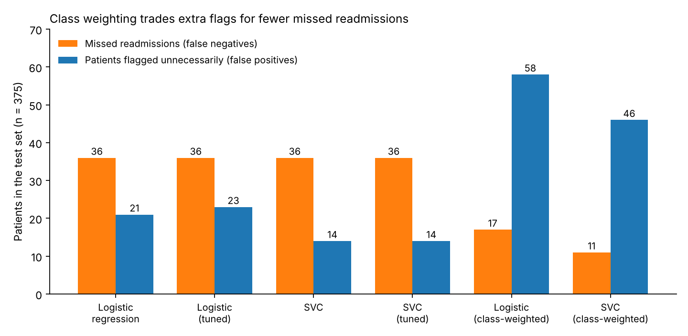
Class weighting cut missed readmissions from 36 to 11 and raised unnecessary flags from 14 to 46.
I would recommend the class-weighted SVC as a decision-support tool. A missed readmission costs the patient and the hospital more than an extra follow-up call, so recall matters more than precision here. It should prompt a clinician's attention, not replace their judgement.
What drives the risk
In the logistic regression (standardised inputs, so coefficients are comparable), higher comorbidity scores, more prior admissions and longer stays push predicted risk up. A scheduled follow-up appointment and higher patient satisfaction push it down. That points to actions a hospital controls: book the follow-up before the patient leaves.
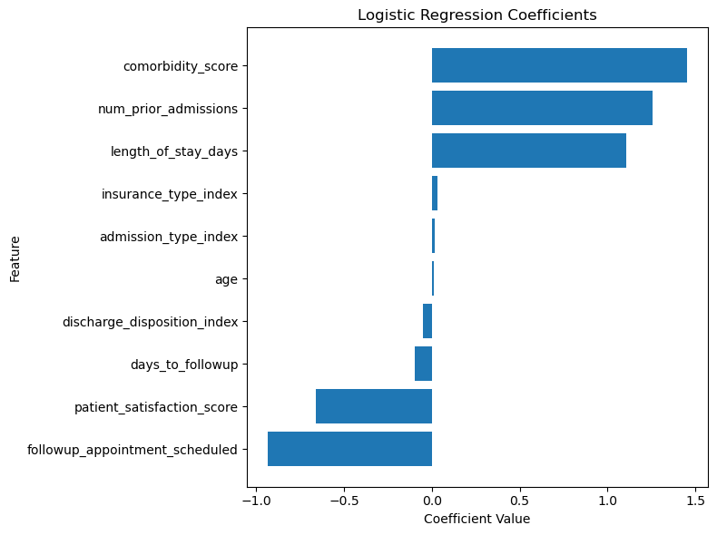
Comorbidity, prior admissions and length of stay raise risk; a scheduled follow-up and higher satisfaction lower it.
Segmenting 1,000 fitness-app users
The second task grouped app users by average daily steps and weekly calories burned. After standardising both variables I ran K-means and Ward hierarchical clustering with three clusters. The elbow plot bends gradually rather than sharply, so three is a defensible choice, not an obvious one.
Segment (K-means)
Average daily steps
Weekly calories burned
Fewer steps, average burn
about 5,600
about 1,970
Many steps, low burn
about 8,800
about 1,450
Many steps, high burn
about 8,500
about 2,570
Ward clustering returns almost the same three segments: every segment average lands within 5% of the K-means value. That agreement is the useful result. It suggests the segments are not an artefact of one algorithm.
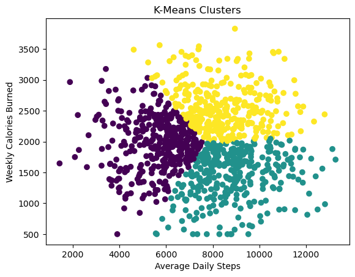
The three segments partition one continuous cloud of users, so treat them as practical groupings, not natural clusters.
Cheap-meal coupons are accepted about seven times in ten; bar coupons about four in ten
Data
12,007 driving scenarios from the UCI in-vehicle coupon dataset
Methods
Random forest, decision tree, logistic regression, Apriori association rules
Tools
Python, pandas, scikit-learn, mlxtend
Which situational and personal factors make a driver accept a coupon? I used 12,007 simulated driving scenarios to compare three classifiers and mine association rules, then turned the findings into targeting advice for a marketing team.
The question
Which contextual and demographic factors most strongly influence whether a driver accepts a coupon recommendation?
Data and set-up
The in-vehicle coupon recommendation dataset (UCI Machine Learning Repository, from Wang et al., 2017). Participants on Amazon Mechanical Turk judged hypothetical driving scenarios.
12,079 rows; 72 duplicates removed, leaving 12,007. 56.8% of scenarios ended in acceptance.
Feature engineering: trip type (social, leisure, home, work), time-of-day groups, expiry flags, weather and temperature groups, travel-time flags, visit-frequency scores for bars, coffee houses and restaurants, and grouped income and age.
Preprocessing and model sit in one scikit-learn pipeline so nothing is learned from the test set. 80/20 stratified split, with 5-fold cross-validation on top.
Which model worked best
Model
Accuracy
Precision
Recall
F1
ROC-AUC
Cross-validated F1
Random forest
0.727
0.722
0.845
0.779
0.793
0.758
Decision tree
0.671
0.664
0.852
0.746
0.727
0.711
Logistic regression
0.675
0.697
0.758
0.726
0.729
0.717
The random forest led on accuracy, F1 and ROC-AUC. I used it mainly to rank drivers, not to deploy a predictor.
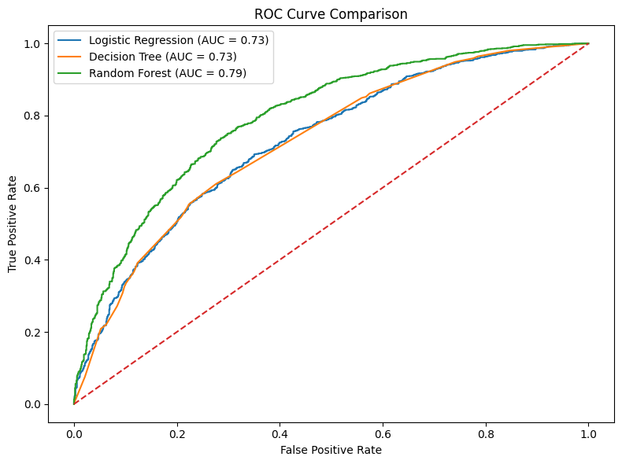
The random forest separates acceptances from rejections better than the simpler models (AUC 0.79 against 0.73).
What drives acceptance
Coupon type matters most. Carry-out and restaurant coupons under $20 are accepted roughly seven times in ten. Bar coupons are accepted about four times in ten, and coffee house and $20 to $50 restaurant coupons sit in between.
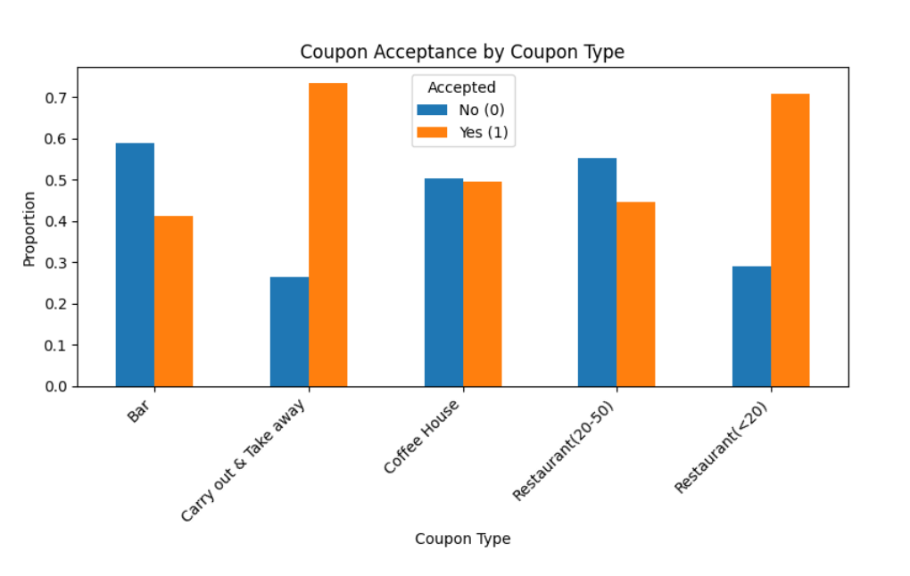
Acceptance is highest for carry-out and cheap restaurant coupons, and lowest for bars.
Past habits matter next. In the random forest, the top four features are indicators for four of the five coupon types, followed by how often someone visits coffee houses, a total food-venue visit score, short expiry, bar visit frequency, travel time over 15 minutes and leisure trips.
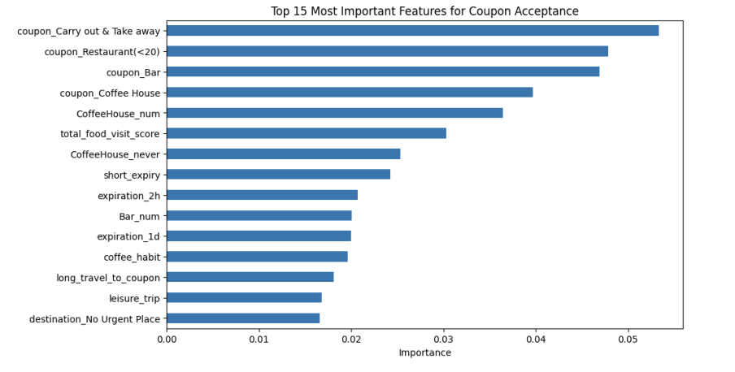
Coupon type and visit habits lead the random forest's feature importance.
Timing and company shape the picture, though not through feature importance. Acceptance peaks around 2PM and is weakest at 7AM, when about half of coupons are accepted. Drivers with friends accept more often than drivers alone (roughly two in three against just over one in two).
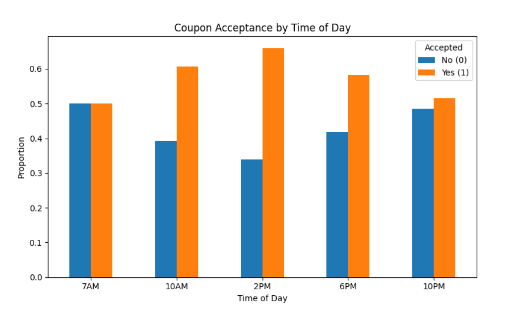
Acceptance peaks in the middle of the day and is weakest at 7AM.
Income matters little. Acceptance rates vary only mildly across income bands, so context and habits are better targeting signals than demographics.
Association rules, read against the base rate
Apriori (minimum support 0.05, confidence at least 0.6) surfaced readable combinations. Lift needs care here: the lifts the algorithm printed (4.94, 2.56 and 2.35) belong to rules whose outcome bundles acceptance with a trip attribute. Compared with the 56.8% overall acceptance rate, the effect of each condition on acceptance alone is more modest:
If the scenario is...
Acceptance rate
Against the 56.8% base rate
Sunny, on a work trip (7AM), one-day expiry
61.2%
about 1.1 times
Under-$20 restaurant coupon, travelling with friends
80.4%
about 1.4 times
One-day expiry, travelling with friends
73.7%
about 1.3 times
In this dataset every 7AM trip is a work trip (both appear 2,976 times), so the first rule describes one group of drivers twice. Trips with friends, a partner or children all appear to go to "no urgent place" too, which is why friends plus cheap restaurant coupons stand out.
Recommendations the evidence supports
Lead with cheap-meal coupons and carry-out offers; be selective with bar coupons.
Send offers around midday and afternoon, not first thing in the morning.
Use visit-frequency habits to choose who gets which coupon.
For group travel, test a coupon framed for sharing.
Brand familiarity, discounts, ad spend and shelf space explain 59% of launch success
Data
1,500 product launches
Methods
Simple and multiple linear regression with assumption diagnostics
Tools
Python, pandas, statsmodels, seaborn
Which controllable levers raise the probability that a new product launch succeeds? Regression on 1,500 launches ranks four of them and finds no sign that season or store region matters.
The question
What factors are most predictive of a product's launch success probability?
Data and set-up
1,500 product launches. The outcome is success_probability, a number between 0 and 1.
I excluded first-month units sold and revenue (they happen after launch), the binary is_successful flag (derived from the outcome) and ID columns.
A correlation heatmap screened the remaining variables. Brand familiarity (r = 0.53), launch discount (0.37), ad spend (0.33) and shelf space (0.20) showed clear relationships. Price, social media mentions, product category, competitor count and weekday launch were all within 0.04 of zero. I kept season and store region as additional checks.
From one lever to six
Simple regressions on one predictor give a feel for each lever. Brand familiarity alone explains 28.6% of the variation in success probability, and launch discount alone explains 14.0%. Adding both lifts R² to 0.416, and the six-variable model reaches 0.593 (adjusted 0.591).
Lever
Coefficient
What it means
Brand familiarity (0 to 1)
0.410
From unknown to fully familiar adds about 41 percentage points
Launch discount
0.0075 per point
Each extra 10 points of discount adds about 7.5 percentage points
Ad spend
0.0000525 per dollar
Each extra $1,000 adds about 5.3 percentage points
Shelf space
0.0125 per sq ft
Each extra square foot adds about 1.25 percentage points
Season index
0.0025 (p = 0.44)
No detectable effect
Store region index
0.0002 (p = 0.95)
No detectable effect
The four levers are all significant at p < 0.001. Their coefficients barely moved between the smaller and larger models, which is reassuring about stability.
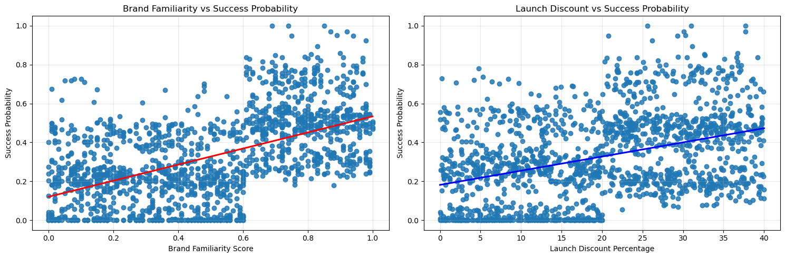
Success probability rises with both brand familiarity and discount, with a pile-up of launches at exactly zero.
What the model can and cannot support
The analysis ranks levers by their effect per unit. It does not rank them by value for money, because discounts, advertising and shelf space all cost different amounts that the data does not contain. A budget recommendation needs those costs first.
Season and region showed no detectable effect here. That is weaker than saying they do not matter: a non-significant coefficient means the data cannot distinguish the effect from zero.
Women earn about 15% less per hour than men, and age and education barely change that
Data
149,316 workers from a 2014 US labour-force survey extract
Methods
Log-wage regression with age and education controls
Tools
Python, pandas, statsmodels, stargazer
Using a US labour-force survey extract of 149,316 workers, I measured the gender earnings gap and tested whether it survives controls for age and education. It does: the estimate stays between about 15% and 16% across ten specifications.
The question
How large is the gender difference in earnings, and how sensitive is it to the controls I add?
Data and set-up
A 2014 extract from the US Current Population Survey's outgoing rotation groups (morg-2014-emp.csv), with 149,316 workers.
New variables: a female indicator, hourly wage w (usual weekly earnings divided by usual weekly hours), its logarithm lnw, and age polynomials up to the fourth power.
Education dummies for the master's, professional and doctoral levels.
Models fitted with statsmodels, results compared side by side with stargazer.
The raw gap
Mean weekly earnings were $765.68 for women and $1,008.99 for men, a gap of 24.1%. Weekly earnings mix pay rates with hours worked. Switching to the log of hourly wage, the gap is much smaller:
Specification (outcome: log hourly wage)
Female coefficient
Approx. gap
R²
Gender only
−0.164
−15.1%
0.016
Plus age, age squared, cubed and fourth power
−0.165
−15.2%
0.139
Plus professional and doctoral degree
−0.160
−14.8%
0.046
Plus professional and master's degree
−0.178
−16.3%
0.088
Standard errors are about 0.003 throughout, so every estimate is distinguishable from zero by a wide margin. Coefficients on a log outcome are approximate percentage differences: exp(−0.164) − 1 is about −15.1%.
How to read the numbers
The gap is about 15% per hour, and about 24% per week. The difference between the two is consistent with women working fewer paid hours on average. I did not tabulate hours by gender to confirm that split.
Age and education barely move the estimate. Across the ten full-sample specifications the female coefficient stays between −0.160 and −0.178. Adding a master's degree dummy widens the gap slightly, which fits women being more likely than men to hold a master's degree.
A low R² is not a flaw here. Gender alone explains 1.6% of the variation in log wages. The goal was to estimate a gap, not to predict an individual's pay. Wages vary for many reasons that gender does not capture.
Late-arriving aircraft cause 40% of delay minutes, and the raw carrier ranking misleads
Data
34,013 carrier-airport-month records
Methods
Data cleaning and exploratory analysis
Tools
Python, pandas, matplotlib, seaborn
A cleaning-and-exploration exercise on 34,013 carrier-airport-month records of US airline delays: find what causes delay minutes, when they peak, and which carriers fare worst. It is also a short lesson in how an average can mislead.
The question
What drives airline delays, and how do delays vary over time and between carriers?
Data and set-up
34,016 rows, one per carrier, airport and month, with 21 columns of flight counts, delay counts and delay minutes by cause (carrier, weather, national airspace system, security, late aircraft).
Cleaning: 3 duplicate rows removed, leaving 34,013. 293 missing values filled with zero. 266 of them appear to come from 19 rows missing every flight and delay figure, and those rows should be dropped instead (see below).
Derived columns: average delay per flight and per delayed flight.
What I found
Late aircraft and carrier problems dominate. Averaged across rows, a late inbound aircraft accounts for about 2,025 delay minutes, carrier issues about 1,674, national airspace system issues about 997 and weather about 324. As shares of total delay minutes: late aircraft 40%, carrier 33%, airspace system 20%, weather 6%, security under 1%. Weather is the smallest of the four main causes.
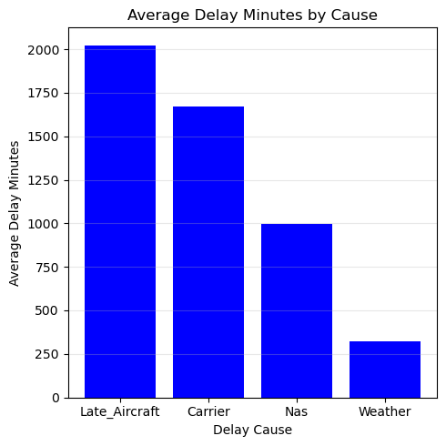
Late aircraft and carrier causes account for about three-quarters of delay minutes.
Delays peak in July and bottom out in October. Average delay minutes per row run from about 8,300 in July to about 2,750 in October. These totals are not adjusted for flight volume, so part of the pattern is simply more flying in summer.
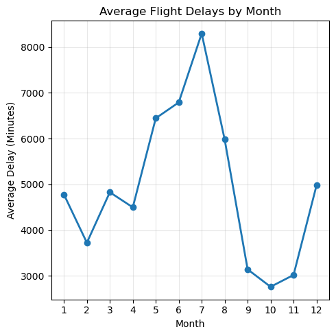
Raw delay minutes peak in July and are lowest in October.
Per flight, the typical delay is modest. The average is 14.9 minutes per flight and 68.5 minutes per delayed flight.
Carrier totals mislead; per-flight rates are fairer. Ranking carriers by total delay minutes mostly lists the biggest airlines. Averaging delay per flight changes the picture: Air Wisconsin stands out at about 33 minutes per flight, well ahead of the next carriers at roughly 22 to 23 minutes. Among the ten highest, CommuteAir and GoJet sit at the bottom with about 17 minutes each.
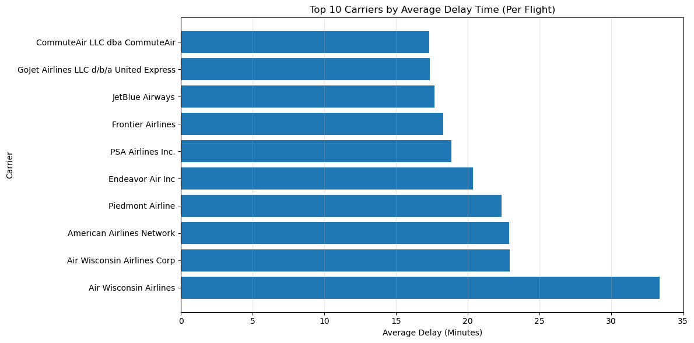
Air Wisconsin has the highest average delay per flight, at about 33 minutes.
Two data-quality catches
Two Republic Airline rows report a single flight with an average delay of more than 12 hours. They were excluded from the per-flight ranking.
The same 12-hour filter also dropped 19 more rows (the counts show 21 rows removed against 2 extreme cases). These are almost certainly the rows whose missing flight counts I had filled with zero: 0 divided by 0 is not a number, so they failed the filter. Filling missing flight counts with zero was the wrong call; dropping those rows is cleaner.